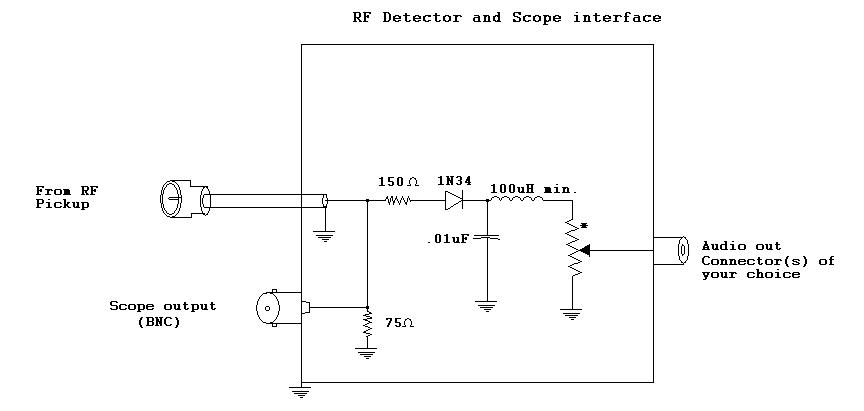
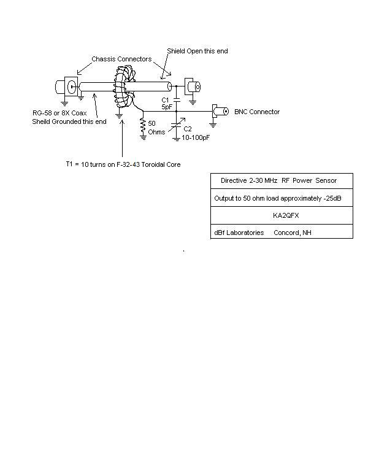

RF Pickups for Signal Monitoring and Measurement.
The attached links describe an RF pickup methodology which I have implemented in various configurations over the years. It is based on an inductive
coupling to measure net RF current in the line. It is simple to build, inexpensive and serves reliably in amateur applications where wide frequency
response is particularly convenient. The advantage of such a coupling is isolation from voltage transients and flashover, low impedance output and
consistent output level across the HF spectrum.
 |
 |
| Click for more detail | Click for more detail |
A principle advantage of this technique's flat response is that band-switching may be accomplished without making adjustments to monitoring equipment.
Becoming familiar with a particular scope pattern affords the operator immediate indication of changes in power output or system impedance as indicated
by changes in RF current irrespective of frequency.
It should be noted that a capacitive and resistive dividers will also exhibit flat response across a wide spectrum, but are subject to some variations
due to small differences between component values since such dividers generally use different value components, nor do they provide the voltage and
transient isolation of the inductive method.
Another feature I like is that using a section of 50 ohm cable inside the pickup enclosure ensures less perturbation of the system characteristic
impedance. This lessens the probability of RF leakage in the local environment and the occasional measurement anomaly.
Driectionality:
This pick-up can easily be configured as a directional coupler to display only forward or reverse power by the addition of a capacitive divider whose
output voltage exactly equals that of that of the inductive pick, and combining them at the terminating reisitor. See figure below. The bridge is adjusted
by terminating the bridge in a matched load in the reverse direction and adjusting the trimmer for zero output. This is a very commonly used circuit on many
RF wattmeters known as a modified Bruene bridge developed at Collins radio in the 50s.

Click for more detal
I would be remiss were I not to mention a technique described using a short parallel wire in close proximity to an RF carrying conductor. This
technique has been widely employed by many manufacturers in numerous measurement bridges over the years, most notably Bird. While this methods
works extremely well it is not without it's caveats. It serves to provide a summing of both voltage and current on the line using a single pickup.
The voltage primarily by it's distance from the line and current primarily by it's parallel length. Depending on termination resistance's of the
sampling line, it effectively functions as a directional coupler. However, without critical placement, balancing capacitive vs. inductive coupling,
and exactly matched values of termination impedance, it's pickup characteristics can be rather arbitrary, particularly with regards to frequency;
which is why so many slugs must be utilized in the Bird style watt meters.
Click for more detal
Some concerns have also been stated about harmonics produced by RF pickups. I find that harmonic generation has not been in evidence using any
implementation I have observed. Rather, any harmonics generated could only be the result of non-linear conduction in associated circuitry; detectors,
arcing, dielectric breakdown, dissimilar metal connections, corrosion, etc. Barring a lengthy discussion of construction practices, I would tend to
focus on detection methods for accurate envelope reconstruction and contend that given the great differences between carrier and modulating frequencies,
that any RF harmonic content in detected outputs is largely a non-issue. Further discussion of demodulation techniques exceeds the scope of this
writing and should be addressed specifically in a later document.
Further Reading:
The material presented here is not intended to build a high accuracy piece of lab equipment, but will prove more than sufficiently accurate for amateur applications.
The above referenced link on Reflectometry discusses some of the compensation
technigues required for more accurate low frequency compensation for such applications. A Google search on "Bruene Bridge" will reveal a vast wealth
of information for more refined applications. I particularly like what NP2K is doing in his
return loss meter design.
I hope you find this useful and interesting.